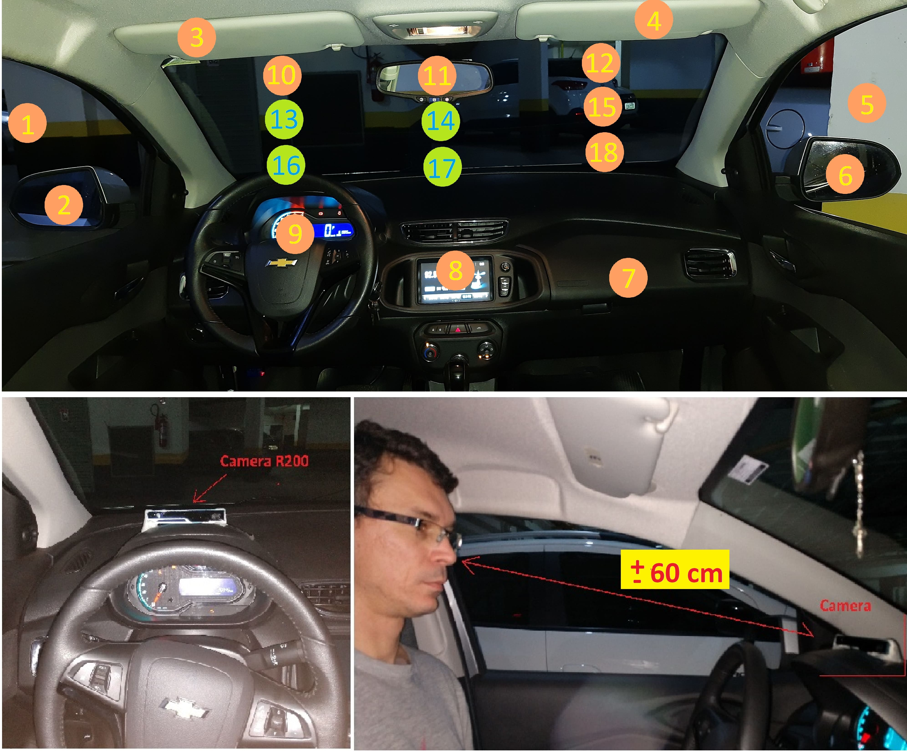

The DG-Unicamp Driver Gaze Zone Dataset is composed of a set of Color, Infrareds and Depth images
anda text file with face detection bounding box for some of the images
The images are saved as BMP and YAML 1.0 files without compression and resolution 240 x 320 pixels.

The images are separeted by driver ID folders where each folder has images from all 19 points of interest of the front car view with below structure
[driver_id]_[point]_[camera_type]_[frame_number].[bmp/yaml]
Example
D:. ├───data ├───p044 ├───44_10_depth_0.yaml ├───44_10_ir1_0.bmp ├───44_10_ir2_0.bmp ├───44_10_rgb_0.bmp
We used the OpenCV face detection algorithm based on DNN
OpenCV’s deep learning face detector is based on the Single Shot Detector (SSD) framework with a ResNet base network
The face detection bounding box file has the structure:
We have the face detection algorithm results running on the IR and RGB images